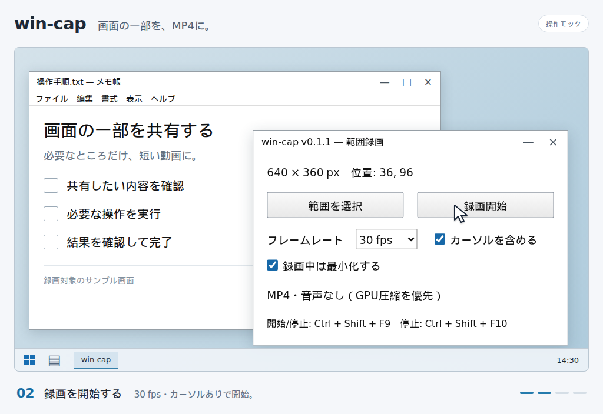
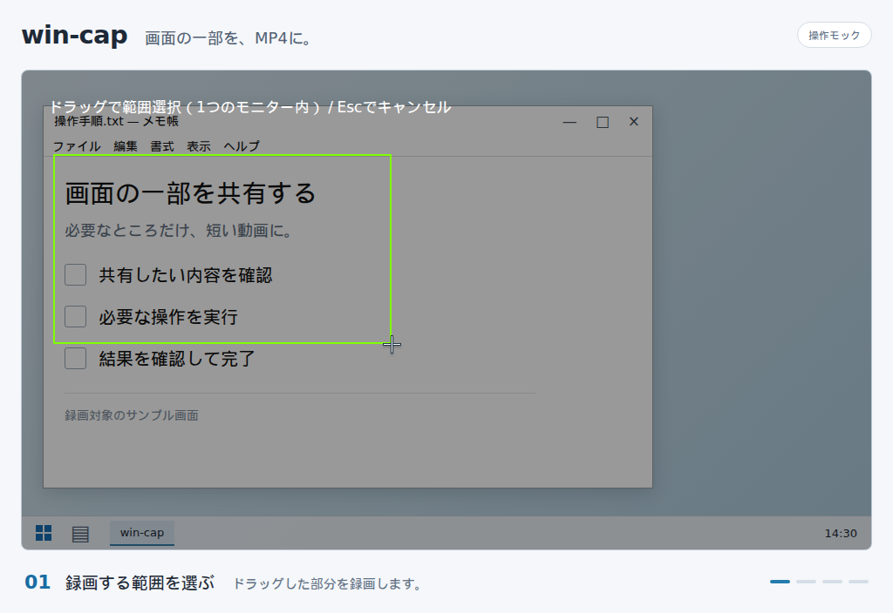
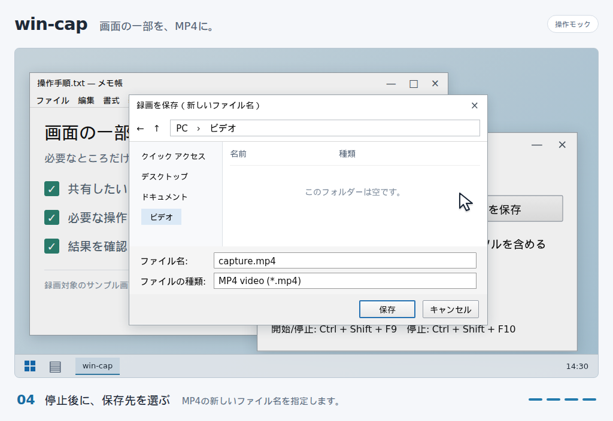

WINDOWS 10 / 11 · 範囲録画
画面の一部を、
MP4に。
見せたい範囲をドラッグして録画。停止してから保存先を選ぶ、音声なしの小さなWindowsアプリです。
Windows 10 2004以降 / Windows 11 · x64
操作イメージ

HOW IT WORKS
録画から保存まで
操作イメージは説明用のモックです。画面の一部を録画して保存する流れを示しています。
-
01
範囲を選ぶ
「範囲を選択」を押して、録画したい部分をドラッグします。Escで選択をキャンセルできます。

-
02
録画を始める
30/60fps、カーソルの有無、録画中に画面を最小化するかを選び、「録画開始」を押します。最小化は初期状態でオンです。
-
03
停止して保存する
Ctrl + Shift + F10 で停止すると保存先を選べます。最小化をオフにした場合は「録画停止」ボタンも使えます。



BEFORE YOU START
使う前に
- MP4 / H.264、音声なし画面の更新に応じて、選んだ範囲を録画します。
- 保存をやり直せる保存先の選択をキャンセルした場合は、「録画を保存」から再試行できます。
- 1つのモニター内で選択48 × 48px以上の範囲を選んでください。
録画したい範囲を、そのままMP4へ。
ZIPを展開して win-cap.exe を起動します。